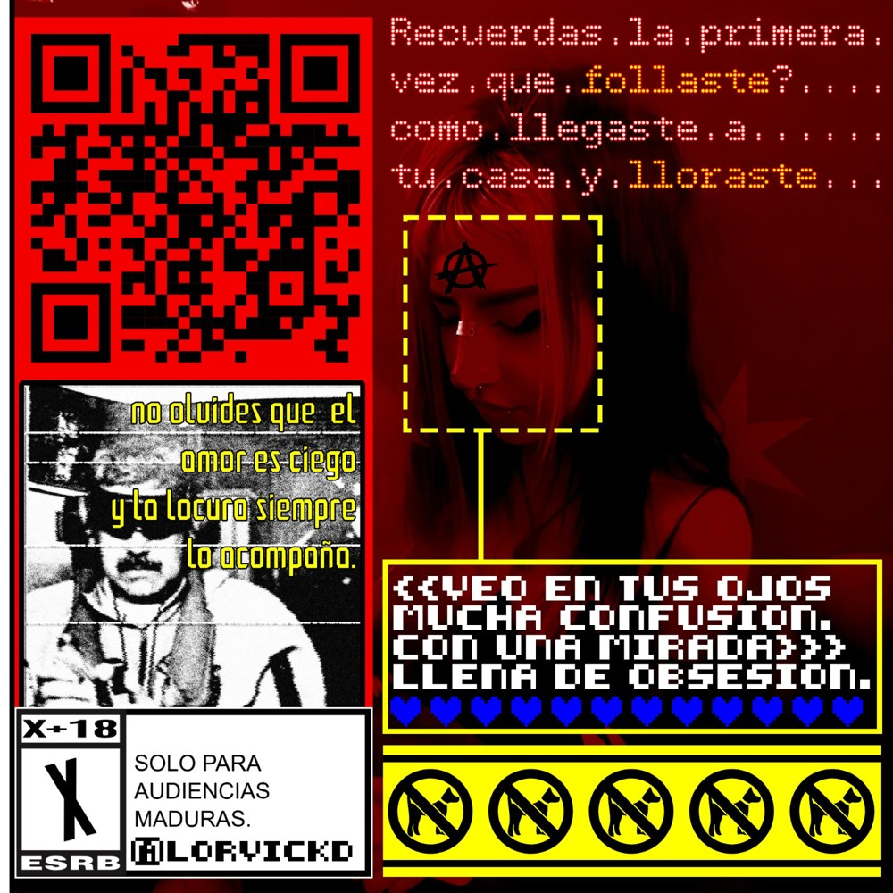

✦ MATADERO 6 (CON QUINTA) ✦

Julián estaba enamorado. Tenía 23 años. También tenía 60. También estaba muerto. Así es el amor: nunca empieza ni termina, simplemente se arrastra.
Quería a Valeria. O quería la idea de Valeria. O quería la ilusión de que alguien lo nombrara en voz baja. A veces quería simplemente no estar solo. Y era lo mismo. Porque el deseo, al final, nunca distingue bien entre la persona, la fantasía y el miedo.
La conoció en un bar barato, con luces azules que parecían de cárcel y cerveza tibia que sabía a óxido. También la conoció en su entierro, cuando ella no apareció. También la conoció en la cama, cuando lloraba contra su hombro y le decía que estaba cansada de Mauricio. Y Mauricio, claro, era constante: con dientes blancos, con sonrisa de afiche, con esa seguridad arrogante de los hombres que nunca dudan. Mauricio no era rival, era estatua. Y lo que se enfrenta a una estatua siempre pierde.
Julián la tuvo. Fue rápido, sí. Fue torpe. Fue lo mejor, porque por un instante creyó que la historia era suya. Fue lo peor, porque sabía que ese instante se agotaba mientras lo vivía. Amar era eso: tocar lo que se deshace.
A veces Julián tenía 40 y marcaba su número desde un baño público, con la voz alterada y las monedas cayendo en un teléfono que nadie usaba ya. A veces tenía 17 y todavía confiaba en que el amor era un pasaporte a otra vida. A veces tenía 82 y se moría con la sensación de que todo había sido un eco inútil. Todo a la vez. Todo repetido. Porque la memoria no es línea recta, sino espiral.
El obstáculo no era Mauricio. El obstáculo era la vida. El obstáculo era esa inercia absurda que empuja a insistir aunque se sepa que nada va a cambiar. Porque el amor no salva, no mejora, no transforma: apenas ocupa un espacio que luego queda vacío. Y aun sabiendo eso, Julián volvía. Siempre volvía.
El desenlace nunca cambió: Valeria regresó a Mauricio. Como si el guion estuviera escrito desde antes. Como si lo de Julián fuera apenas una nota al pie, una interrupción incómoda en un libro ajeno. Julián quedaba solo. Quedaba siempre. Quedaba en todos los tiempos: joven, viejo, muerto, vivo. Y sin embargo la buscaba. No por esperanza, sino por hábito. Porque buscarla era lo único que le quedaba.
Y hubo un momento (mínimo, improbable) en que la realidad pareció romperse. En que ella lo llamó primero. En que Mauricio desapareció de la escena. En que Julián despertó y la vio dormir a su lado, y por un parpadeo creyó que había ganado, que había torcido el destino.
Pero todo parpadeo termina. Y al abrir los ojos ya estaba de nuevo en la misma repetición: muerto, borracho, adolescente, viejo. En cada edad, en cada escenario, repitiendo su nombre, sabiendo que no importaba, sabiendo que igual lo haría otra vez.
Y así fue.
Y así es.
Y así será.
Lorenzo Garcia Izaciga · Septiembre 2025
← volver a Vistazo